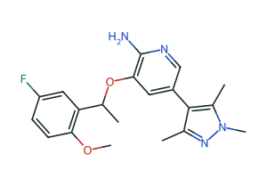

专利家族
2
优先权 2010-05-04 至 2012-03-06
台账范围（结构记录 / 观测）
35 / 271
专利证据卡 6 · 论文 29；观测含 2 项未测
项目目标
改善细胞活性，同时控制外排
4 个性质 · 查看 SAR 分析 →
具名确认（L3）
0
6 张证据卡待独立复核 · 去复核队列 →
2010
2011
2012
2010-05-04
家族 44278717
WO2011138751A2
开链醚系列 · Examples 1、6、7 · 10 项测量


2012-03-06
家族 48142828
引用较早家族
WO2013132376A1
大环酰胺系列 · Examples 2、4、6 · 12 项测量


下一步
补测建议第 1 位：6f 的细胞 IC50 6f → 6e 酶活性有利、外排比不利，缺细胞活性无法判断 6 张证据卡等待独立复核 具名确认后才能作为对外结论引用
确认默认噪声阈值
活性与外排比按 2 倍、LogD 按差值 0.5，均标为待化学家确认
外部来源尚未实连
ChEMBL、SureChEMBL、PubChem 在线核对前，新专利候选可能不全
跨家族关系
事实、研究假设与证据缺口分栏；只有你可以把假设写成结论
可核查事实 · 3
较晚专利 WO2013132376A1 引用较早专利 WO2011138751A2
两组所选分子共享 2-氨基吡啶醚与氟苯片段
较晚专利 3 个实施例的 WT Ki 均报告为 <0.200 nM
研究假设 · 1
两个家族属于同一条相关系列，较晚家族以大环酰胺替代开链醚
未署名 · 等待你的判断
证据缺口 · 3
没有证据表明 Example 7 → Example 6 是真实优化步骤
跨专利测量未验证可比，只并列原始值
6 张证据卡未经独立化学家复核